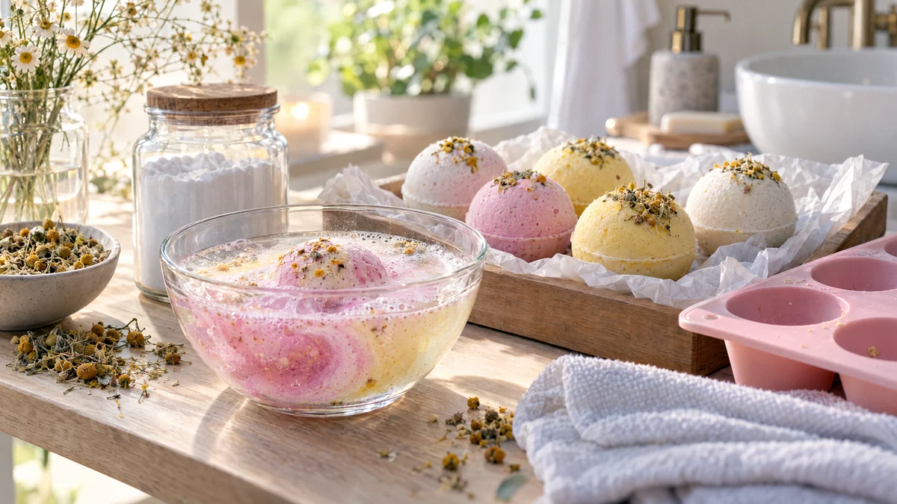

RESTFEST · HEMMASPA
Brusande badbomber med vanilj och kamomill
Bikarbonat, citronsyra och potatismjöl ur bakskåpet, och innehållet i en påse kamomillte. Allt pressas till runda, pastellfärgade bomber med små gyllene blommor på toppen, som brusar och doftar vanilj när de möter badvattnet. Ser ut som från en dyr skönhetsbutik och är ett perfekt pyssel en regnig söndag.
- Förberedelse
- 20 min + 1 dygns torkning
- Verkningstid
- 15–20 min i badet
- Räcker till
- ca 6 bomber
- Nivå
- Medelsvårt
Bra att veta. Gör ett lapptest innan du provar något nytt: stryk lite på insidan av underarmen och vänta ett dygn.
 Det här behöver du
Det här behöver du
Tryck på + vid det du behöver köpa.
Gör så här
- Blanda bikarbonat, citronsyra, potatismjöl och vaniljsocker i en torr skål. Krossa eventuella klumpar med fingrarna.
- Rör ihop oljan och karamellfärgen i en liten skål.
- Ringla oljan över pulvret lite i taget och arbeta in den med fingrarna. Blandningen ska kännas som fuktig sand.
- Spraya 2–3 gånger med vatten och blanda snabbt. Kläm ihop en näve: håller den formen är den klar. Spraya lite i taget, för mycket vatten startar brusandet för tidigt.
- Strö lite kamomill i botten av formarna. Packa blandningen hårt i formarna och tryck till ordentligt.
- Låt bomberna torka i formarna i 4 timmar. Knacka sedan försiktigt ut dem och låt dem torka ett dygn till på ett bakplåtspapper.
Presentation och användning
- Lägg badbomberna i en glasburk eller en papperspåse med silkespapper, så blir de en fin present.
- Gör några omgångar i olika färger och varva dem i en ask, som praliner.
- Släpp ner en bomb i ett varmt bad och se den brusa och sprida doft och färg.
- Har du inget badkar, använd en halv bomb i fotbadet i behandling 35.
Bra att veta
- Citronsyra svider i ögon och på sår. Tvätta händerna efteråt, och låt barn bara hjälpa till med en vuxen bredvid.
- Förvara bomberna torrt och utom räckhåll för små barn, som kan tro att de är godis.
- Använd bara några droppar färg, annars kan badkar och handdukar färgas.
- Oljan gör badkaret halt. Skölj ur det direkt efteråt.
- Bomberna håller i ca 3 månader i en lufttät burk.